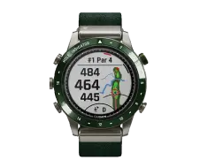

<section class="hero section">
  <div class="hero-container container">
    <h1 class="hero-title">Welcome to our collection of premium watches</h1>
    <div class="swiper">
      <div class="mySwiper">
        <div class="swiper-wrapper">
          <div class="swiper-slide">
            
          </div>
          <!-- <div class="swiper-slide">
          
        </div>
        <div class="swiper-slide">
          
        </div>
        <div class="swiper-slide">
          
        </div>
        <div class="swiper-slide">
          
        </div> -->
        </div>
      </div>
      <div class="swiper-buttons">
        <button class="button-prev">
          <svg class="button-prev-icon" width="18" height="18">
            <use href="../img/sprite.svg#icon-left-button"></use>
          </svg>
        </button>
        <button class="button-next">
          <svg class="button-next-icon" width="18" height="18">
            <use href="../img/sprite.svg#icon-right-button"></use>
          </svg>
        </button>
        <p class="swiper-numbers"><span class="swiper-number">01</span>05</p>
      </div>
    </div>
    <p class="hero-descr">
      Our watches are not just timepieces, but also an expression of your
      personality and lifestyle. From classic designs to modern ones, we have a
      watch to suit every taste and occasion.
    </p>
    <picture>
      <source
        media="(min-width: 1280px)"
        srcset="
          ../img/hero/desk-bg-676x394@1x.webp 1x,
          ../img/hero/desk-bg-676x394@2x.webp 2x
        "
        type="image/webp"
      />
      <source
        media="(min-width: 768px)"
        srcset="
          ../img/hero/tab-bg-704x410@1x.webp 1x,
          ../img/hero/tab-bg-704x410@2x.webp 2x
        "
        type="image/webp"
      />
      <source
        media="(max-width: 767px)"
        srcset="
          ../img/hero/mob-bg-335x410@1x.webp 1x,
          ../img/hero/mob-bg-335x410@2x.webp 2x
        "
        type="image/webp"
      />
      
    </picture>
  </div>
</section>
